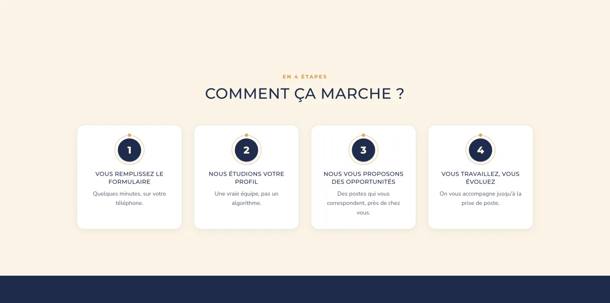

Web · 2026
EXTRALIMO
Mise en relation, à intermédiation humaine
EXTRALIMO met en relation les talents et les entreprises de l'hôtellerie-restauration, avec un vrai accompagnement humain. Pas un job board : une équipe qui sélectionne, propose et suit chaque rapprochement.
 EXTRALIMO
EXTRALIMOL'idée
Une équipe, pas un algorithme.
01 Le pourquoi
La restauration galère à recruter, et les candidats galèrent à trouver les bonnes places. En France, rien n'est vraiment pensé pour ce secteur. Le projet est né de deux professionnels du métier. Ayant moi-même travaillé en restauration, j'ai tout de suite vu la justesse du besoin, et j'ai construit la plateforme qui y répond.
“ On trouve, vous brillez. ”

02 La démarche
a.L'humain avant l'algo
Aucun matching automatique : chaque rapprochement est décidé par l'équipe, souvent après un simple coup de fil. J'ai développé un moteur de suggestions qui aide à la décision, sans jamais la remplacer.
b.La confidentialité comme règle d'or
Les coordonnées ne sont jamais exposées, ni côté candidat, ni côté entreprise. Une règle métier non négociable, inscrite dans le code.
c.Tout le secteur couvert
Extra, saison, CDD, CDI, apprentissage. De la plonge à la réception, la plateforme colle aux vrais besoins du terrain.
d.Pensée pour durer
Développée en Laravel : inscription sans compte, suivi des placements, import des profils, notifications. Une base solide en production.
EXTRALIMO est en ligne (extralimo.fr), en cours de lancement, avec un ancrage local en Touraine. J'ai développé l'ensemble de la plateforme, en apportant aussi mes idées sur le site et la logique métier, fort de mon passé en restauration. Le nom ? « Extra » pour les extras, « limo » pour le limonadier, le tire-bouchon du serveur. Un clin d'œil au métier.
Galerie